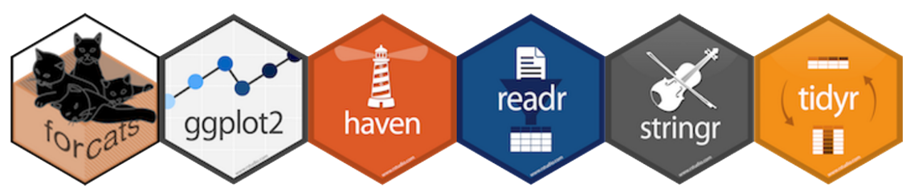
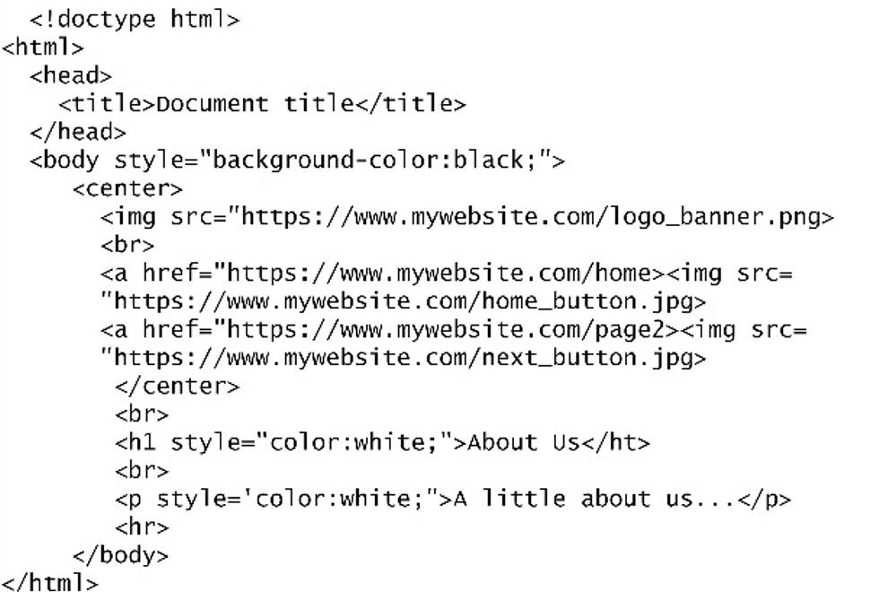
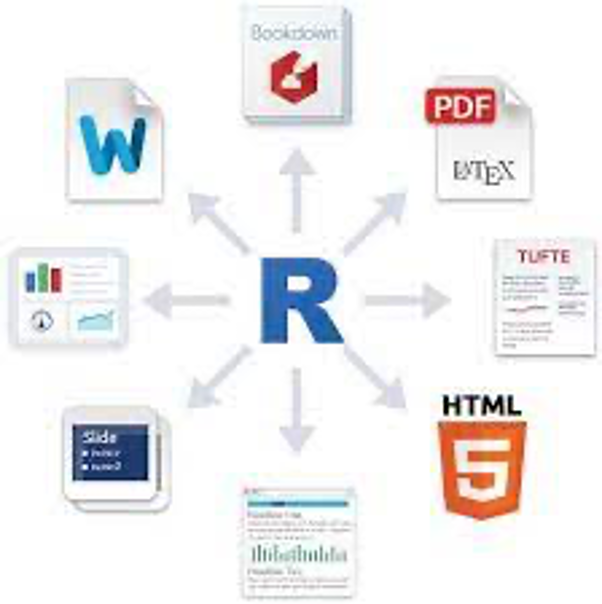
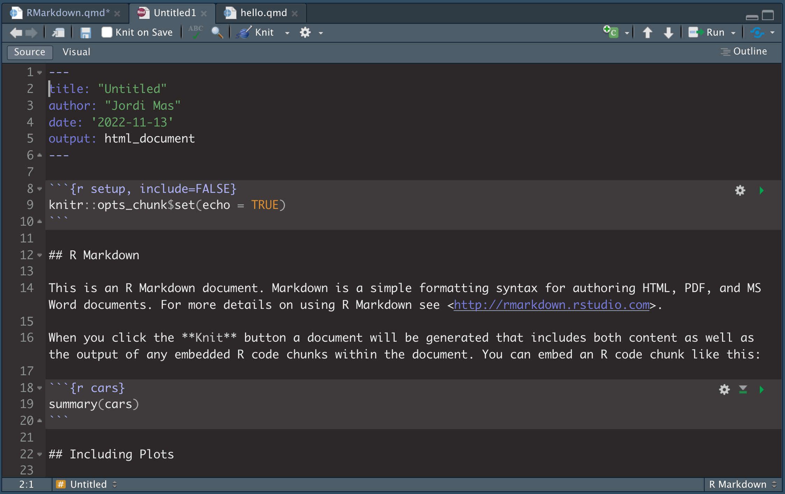
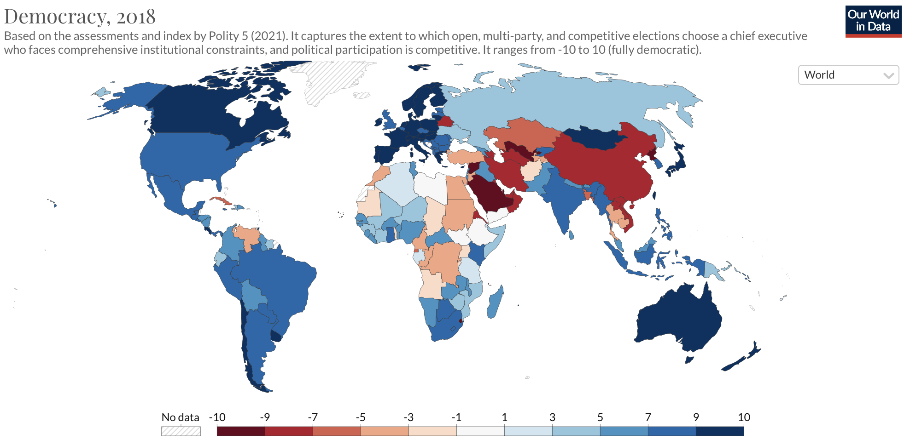
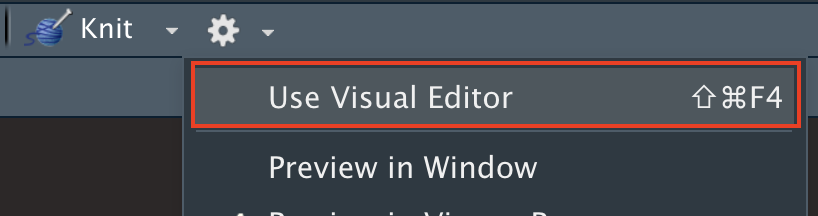

RMarkdown
Postgrau d’Analista de Dades (UB)
Sumari
- Què és RMarkdown?
- Repàs R
- etc.
Què és RMarkdown?
Un paquet d’R
S’instal·la com qualsevol altre.

Un llenguatge (o una prosa)
- John Gruber, 2004.
- Un format més fàcil de llegir i d’escriure que la majoria de llenguatges web com l’Html.
- Convertible fàcilment a Html, Pdf…

Eina per a presentar resultats
- Imprescindible per a un bon analista de dades.
- Permet transformar en un ampli rang de formats el codi d’R.
- Exemples:

Repàs primeres sessions
RStudio
- Crear projecte
- Diferència entre instal·lar i carregar paquets
- Utilitzar l’Environment
- Importar arxius: csv, csv2, xlsx, dta, sav…
RMarkdown
Crear un document: YAML - Text - Chunk
Descarregar tutorial
Tutorial RMarkdown
Exercici 1
Crear una petita història amb Polity V:
- Descarregar la base de dades Polity V a https://www.systemicpeace.org/inscrdata.html
- Text amb tots els formats possibles.
- Un marc de dades
- Dos plots
Slide with a pause
content before the pause
content after the pause
Slide Title
Holi holi
Slide Title
Footers
- Green 1
- Brown
- Purple
Custom footer text
Code
Holi
Holi
Executable code
# A tibble: 3 × 14
name height mass hair_…¹ skin_…² eye_c…³ birth…⁴ sex gender homew…⁵
<chr> <int> <dbl> <chr> <chr> <chr> <dbl> <chr> <chr> <chr>
1 Finis Valor… 170 NA blond fair blue 91 male mascu… Corusc…
2 Luke Skywal… 172 77 blond fair blue 19 male mascu… Tatooi…
3 Anakin Skyw… 188 84 blond fair blue 41.9 male mascu… Tatooi…
# … with 4 more variables: species <chr>, films <list>, vehicles <list>,
# starships <list>, and abbreviated variable names ¹hair_color, ²skin_color,
# ³eye_color, ⁴birth_year, ⁵homeworldTabsets
Slide Title
Video
RMarkdown avançat (YAML)
Data automàtica
Quan fem Knit, ens imprimeix automàticament el dia d’avui.
[1] "2022-11-17"Foto
Posem una foto a la capçalera del document.
Taula de continguts
Customitzem elements de la taula de continguts.
Tema
Seleccionem l’estil visual i el subratllat:
- Tema: default, cerulean, journal, flatly, darkly, readable, spacelab, united, cosmo, lumen, paper, sandstone, simplex, yeti, and null.
- Highlight: default, tango, pygments, kate, monochrome, espresso, zenburn, haddock, breezedark, textmate, null.
Gràfics per defecte
Els gràfics que apareixen al document han de tenir per defecte algunes dimensions determinades?
Paràmetres
Establim uns paràmetres1 al YAML que al llarg del document podrem utilitzar com a codi.
En el document, podem accedir als paràmetres de tres maneres:
- A. Al text,
- B. Als chunks,
- C. Als títols de gràfic,
Plegar codi
Creem un desplegable per cada chunk amb codi (echo = T) que tinguem al document.
Formats d’output
Al YAML podem especificar el tipus de format.
title: "Postgrau d'Analista de Dades (UB)"
author: "Nom de l'estudiant"
output:
html_document:
code_folding: hide
pdf_document:
toc: yes
word_document:I també podem crear diapositives
Text avançat
Tabsets
Incloure codi al text
En qualsevol moment podem fer referència al text sobre qualsevol dada ja carregada en un chunk previ.
- A. Carreguem les dades:
B. Referenciem les dades al text de la següent manera:
Quadres de text
Incrustar tuits i vídeos
Referències al text
Per referenciar una secció del document, el més adequat és posar el codi de la referència just després del títol de secció. Aquest codi el posarem entre claus i encaplaçat del coixinet. Per exemple:
# Introducció{#intro}Llavors, en qualsevol moment del text podrem referenciar la secció d’una manera molt similar a la manera que referenciem les pàgines web: [text](#intro). El text que faci la referència el posarem entre claudàtors seguit dels parèntesis, que inclouran el codi de la secció amb un coixinet davant.
En aquest enllaç, també podeu veure com es poden referenciar taules i marcs de dades.
Posar bibliografia
Amb un document BibTex (.bib)1.
- Obrim un document de text (Text file) i el guardem com a
biblio.bib.
@book{Singer1972,
address = {New York},
author = {Singer, J. David and Small, Melvin},
publisher = {Wiley},
title = {{The wages of war, 1816-1965: a statistical handbook}},
year = {1972}
}- Introduïm al YAML:
bibliography: biblio.bib- Citem al text.
- Si l’envoltem de claudàtors
[@Singer1987]ens posarà nom i any entre parèntesi: [@Singer1987]. - Si no utilitzem els claudàtors
@Singer1987ens posarà només l’any entre parèntesi: @Singer1987.
- En l’última línia del document de RMarkdown, posarem un títol
# Referènciesper separar la bibliografia de la resta del text.
RMarkdown avançat
Taules
kable(df, - col.names = c(“Noms”, “Ben”, “Posats) - align = c(”ccc”) - caption = “Títol”
Taules de tota mena amb KableExtra
Figures
fig.width: amplada en inches.fig.height: alçada en inches.fig.align: “left”, “right”, “center”.fig.dim: primer width i després height, c(5,3)out.width: “50%” ocuparà el 50% de l’amplada del report
Opcions globals
Opcions que son per tot el document: - posar un chunk amb include = FALSE - knitr::opts_chunk$set(fig.align = “center”, echo = TRUE)
knitr::opts_chunk$set(comment = ’’, fig.width = 6, fig.height = 6)
És recomanable tenir un primer chunk amb el nom setup o similar on anotem algunes configuracions bàsiques del nostre RMarkdown. És molt útil utilitzar el següent codi per marcar les opcions per defecte de tots els chunks del document. A continuació indiquem que s’amagui el codi, els missatges i avisos de tots els chunks.
knitr::opts_chunk$set(echo = FALSE, message = FALSE, warning = FALSE)El primer chunk també pot ser útil per carregar els paquets i objectes que necessitarem durant el document.
Què evitar als chunks
- download.file
- carregar bases de dades d’internet
- funcions que carreguen bases de dades (ex. CEO)
Dashboards
Canviar mida de text
Taules
Una altra de les assignatures pendents de RMarkdown són les taules. Imaginem-nos com creem una taula en Word: anem a “Crear taula” i simplement ens demanarà el nombre de files i columnes de la taula. En RMarkdown és molt més embolicat. Vegem un exemple. Aquest és el codi que haurem d’utilitzar per crear una taula.
| Funció | Paquet | Descripció |
|--------------|-----------|------------------------------------------------------|
| `filter()` | `dplyr` | Filtra les observacions d'un marc de dades |
| `separate()` | `tidyr` | Separa els elements d'un vector en base a un criteri |
| `read_csv()` | `readr` | Llegeix els arxius CSV |
| `ggplot()` | `ggplot2` | Reprodueix elements gràfics || Funció | Paquet | Descripció |
|--------------|-----------|------------------------------------------------------|
| `filter()` | `dplyr` | Filtra les observacions d'un marc de dades |
| `separate()` | `tidyr` | Separa els elements d'un vector en base a un criteri |
| `read_csv()` | `readr` | Llegeix els arxius CSV |
| `ggplot()` | `ggplot2` | Reprodueix elements gràfics |Hi ha algunes opcions, més senzilles, per crear taules. La primera és construir-les a partir d’un marc de dades o una matriu de dades. La segona és utilitzar l’Editor Visual (veure següent apartat).
Editor visual
L’Editor Visual va sortir en una de les actualitzacions de RMarkdown del 2020 per donar resposta a usuaris que necessitaven una interfície més semblant a Word per generar documents. Per utilitzar l’Editor Visual, heu de clicar a la rodeta del document de RMarkdown i seleccionar la primera opció:
Amb l’editor visual veurem una interfície que ens serà molt més familiar. No obstant, recomanem utilitzar-lo només puntualment.
Exportar i publicar
Publicar un document generat amb RMarkdown a internet és molt ràpid. La forma més directa és mitjançant RPubs, encara que també es poden fer pàgines web més sofisticades, blocs o llibres.
- RPubs: RPubs és la manera més ràpida de publicar a la xarxa. A dins d’RStudio, un cop l’Html s’hagi generat en el Viewer, cliqueu a l’icona blava del Viewer (Publish -> Publish a Document), seleccioneu RPubs i seguiu les instruccions.
- Bookdown: Permet crear llibres com el que esteu llegint.
- Blogdown: Permet crear blocs, com per exemple: www.jordimas.cat.
Exportar
El món de l’endemà
Referències
Bibliografia principal
- Guia ràpida de RMarkdown a la web de RStudio.
- Cheatsheet RMarkdown.
- Capítol de RMarkdown al llibre R para ciencia de datos [@Grolemund2020].
- El llibre complet: RMarkdown: The Definitive Guide [@rmarkdown2018].
RMarkdown - Postgrau d’Analista de Dades (UB)